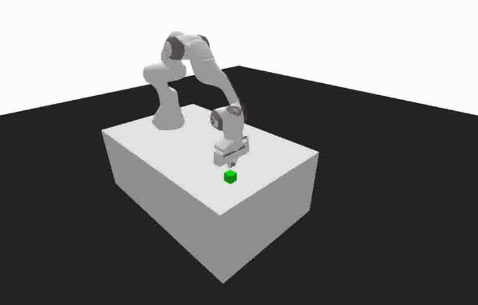

|
Kausar Patherya I am a PhD student at Georgia Tech's LLAMAS Lab, working at the intersection of AI and Systems. My research focuses on making efficient, multimodal AI run instantly on wearable technology — linking the physical world with ubiquitous intelligence. Nothing on here is unique. It is an amalgamation of all that I've read so far, helping me observe this world of ours through fresh eyes. If I happen to see far, it's because I stand on the shoulders of giants. Beyond the classroom, you might find me at a CrossFit gym, in quiet meditation, lost in a good book, or coaxing melodies from piano keys. May all beings be happy 🌻 |

|
BlogMy research focuses on intelligent systems, entities that can one day perceive the world as humans do. I'm fascinated by AI and where it can lead our civilization. I hope to be part of this revolution, contributing my own little verse. |
|
|
Flash-Fusion: Enabling Expressive, Low-Latency Queries on IoT Sensor Streams with LLMs
Kausar Patherya, Francisco Romero, Ashutosh Dhekne arXiv / frontend / firmware / demo We present Flash-Fusion, an end-to-end edge-cloud system that reduces the IoT data collection and analysis burden on users. Using an LLM planner, the system enables cost-effective querying of high-volume sensor streams without exceeding context limits. |
|
|
The Georgia Tech AI Podcast
Interviews with leading AI and robotics researchers youtube / spotify The mission of this podcast is simple yet ambitious - to make cutting-edge AI research accessible to everyone. Through my interviews, I delve into the minds of the top researchers at Tech who are shaping the future of the intelligence age. |

|
SIT-UP: Smart Integrated Technology for Upright Posture
Kausar Patherya, Rishabh Goel, Justin Wit, Anwesha Gorantla CS7633, Fall 2024 code / slides / references A novel approach to posture correction by integrating computer vision with vibratory and auditory feedback, utilizing a height-adjustable standing desk capable of autonomous adjustments. |
|

|
Mastering Kuka Pick & Place Operations with PyBullet
Kausar Patherya, Arjun Bansal, Ruchi Patel, Ayushi Rajpoot CSE6243, Fall 2024 code / slides / references This blog post compares three reinforcement learning algorithms - A2C, DQN, PPO - to the task of robotic arm manipulation for pick-and-place tasks using the Kuka environment simulation on PyBullet. |
|
Website design by Jon Barron. Visit count: and counting! |